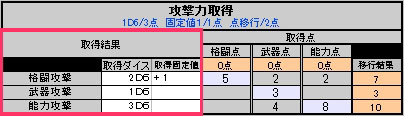

|
攻撃には【格闘】、【武器】、【能力】の３種があります。
▼まずはそれぞれの攻撃力取得点を算出します。
▼算出した取得点を使ってキャラクターの攻撃力を取得し、決定します。
上記の攻撃力を取得点を消費して得る事ができます。 ●取得点は要全消費。任意切捨ては不可。 ●最低１Ｄ６は取得必須。 取得点が足りない場合は以下の取得点移行を行う事。 又、以下の条件で各取得点は他取得点に移行する事ができます。
↓エクセルシートの記入方法は以下の様になります。  以上を踏まえて自身のキャラクターそれぞれの攻撃力を決定します。 ただし各攻撃方法で取得上限固定値が存在するので、以下の上限を超えて固定攻撃値を取得する事はできません。
|